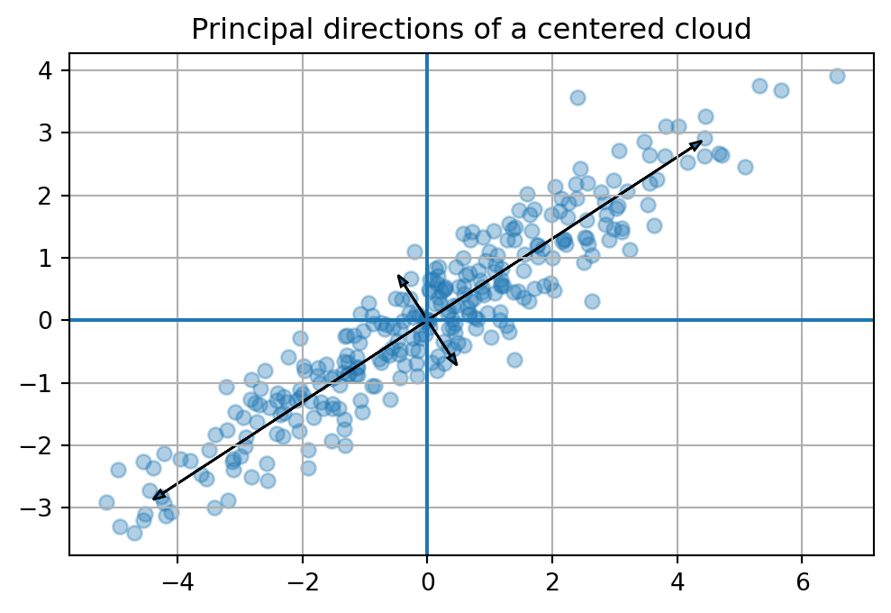

A dataset is not only a table. It is also a shape.
Each row is a point. Each column is a coordinate. When many rows are drawn together, they form a cloud in feature space. Some clouds are round. Some are long and thin. Some are flat like a sheet. Some are almost low-dimensional even though they live in hundreds or thousands of coordinates.
Principal Component Analysis, usually called PCA, begins with a simple visual question:
If this data cloud has a posture, what directions is it leaning toward?
A group of students may vary mostly along a direction that mixes study time, attendance, and homework completion. A collection of images may vary mostly along directions such as brightness, contrast, or horizontal strokes. A set of documents may vary mostly along topic directions. A matrix of users and movies may vary along hidden taste directions.
PCA finds these directions. It gives a new coordinate system adapted to the data itself.
The first principal component is the direction in which the centered data has the largest spread. The second principal component is the next-largest spread direction, perpendicular to the first. The later components continue the same pattern.
The central message of this chapter is:
ImportantMain idea
PCA finds orthogonal directions of maximum variation. It rewrites data in a coordinate system learned from the data cloud itself.
This chapter brings together many ideas from earlier chapters:
vectors and data points;
distance and projection;
orthogonality and orthonormal bases;
eigenvectors and eigenvalues;
energy landscapes and quadratic forms;
the singular value decomposition.
PCA is not a new isolated trick. It is a meeting place for the geometry of linear algebra.
19.2 Learning goals
By the end of this chapter, you should be able to:
explain PCA as finding important directions in a data cloud;
explain why centering is essential before PCA;
compute variance along a direction;
connect PCA to projections and best low-dimensional approximations;
connect PCA to covariance matrices, eigenvectors, and eigenvalues;
connect PCA to SVD;
interpret principal component scores and loadings;
use PCA for visualization, compression, denoising, and feature understanding;
With two features, we can draw the data. With three features, we can still imagine it. With fifty, five hundred, or fifty thousand features, direct visualization fails.
But high-dimensional data often has hidden low-dimensional structure. The data may live near a line, a plane, or a lower-dimensional subspace.
PCA asks:
Can we find a small number of directions that explain most of the variation in the data?
If the answer is yes, then PCA gives us a lower-dimensional summary of the data.
NoteWhy PCA is useful
PCA is useful when many coordinates are present but much of the meaningful variation is controlled by fewer hidden directions.
column view: each column is one feature measured across all data points.
PCA uses both views. It studies the geometry of the row cloud, but it also studies how columns vary together.
19.5 18.3 Centering: moving the cloud to its own origin
PCA studies variation around the center of the data. Therefore, the first step is to subtract the mean vector.
The mean vector is
\[
\bar{x}=\frac{1}{n}\sum_{i=1}^n x_i.
\]
The centered data points are
\[
z_i=x_i-\bar{x}.
\]
In matrix form, the centered data matrix is
\[
X_c=X-\mathbf{1}\bar{x}^T,
\]
where \(\mathbf{1}\) is a column vector of \(n\) ones.
WarningPCA should usually be centered
Without centering, PCA may chase the location of the cloud instead of its shape. Centering moves the mean to the origin so that directions through the origin describe variation.
The variance along a unit direction \(u\) can be rewritten as a quadratic form:
\[
\frac{1}{n}\sum_{i=1}^n (z_i\cdot u)^2
= u^T C u.
\]
So PCA is an optimization problem on the unit sphere:
\[
\text{maximize } u^T C u \quad \text{subject to } \|u\|=1.
\]
From Chapter 15, we know that a symmetric matrix defines an energy landscape. The covariance matrix is symmetric and positive semidefinite. Its eigenvectors give the principal axes of that landscape.
ImportantPCA and eigenvectors
The principal component directions are eigenvectors of the covariance matrix \(C\). The corresponding eigenvalues are the variances captured in those directions.
The first eigenvector of \(C\) points along the largest spread of the cloud. The second eigenvector points along the next largest spread and is orthogonal to the first.
Code
plt.figure(figsize=(6, 6))plt.scatter(Xc[:,0], Xc[:,1], alpha=0.35)origin = np.zeros(2)for k inrange(2): v = evecs[:, k] length =2*np.sqrt(evals[k]) plt.arrow(0, 0, length*v[0], length*v[1], head_width=0.12, length_includes_head=True) plt.arrow(0, 0, -length*v[0], -length*v[1], head_width=0.12, length_includes_head=True)plt.axhline(0)plt.axvline(0)plt.grid(True)plt.gca().set_aspect('equal', adjustable='box')plt.title('Principal directions of a centered cloud')plt.show()

19.9 18.7 Scores and loadings
PCA has two kinds of objects that students often confuse.
The loading vectors are the principal directions in feature space. They tell us how original features combine to form principal components.
The scores are the coordinates of each data point in the new PCA coordinate system.
If \(V_k\) contains the first \(k\) principal directions as columns, then the score matrix is
\[
Y_k=X_cV_k.
\]
Each row of \(Y_k\) gives the coordinates of one centered data point in the first \(k\) principal component directions.
NoteLoadings and scores
Loadings answer: What directions did PCA find?
Scores answer: Where do the data points sit in those new directions?
So the right singular vectors in \(V\) are the principal directions, and the eigenvalues of \(C\) are
\[
\lambda_j=\frac{\sigma_j^2}{n}.
\]
ImportantPCA and SVD
PCA is SVD applied to centered data. The right singular vectors are principal directions. The squared singular values, divided by \(n\), are variances.
Code
U, S, Vt = np.linalg.svd(Xc, full_matrices=False)V_svd = Vt.TS**2/len(Xc)
array([6.88375838, 0.18577647])
19.14 18.12 Why scaling matters
PCA is sensitive to feature scale. If one feature is measured in thousands and another in decimals, the large-scale feature may dominate variance.
There are two common choices:
Centered PCA: subtract feature means but keep original units.
Standardized PCA: subtract means and divide by standard deviations.
Standardization produces features with mean \(0\) and variance \(1\):
\[
z_{ij}=\frac{x_{ij}-\bar{x}_j}{s_j}.
\]
Use centered PCA when the units and scales are meaningful. Use standardized PCA when features are measured in very different units and should be compared more evenly.
WarningScaling changes the question
PCA on centered data asks: Which directions explain the most raw variation?
PCA on standardized data asks: Which directions explain the most variation after all features are placed on comparable scale?
19.15 18.13 Worked example: PCA by hand for a \(2\times 2\) covariance matrix
Suppose the covariance matrix is
\[
C=\begin{bmatrix}4&2\\2&3\end{bmatrix}.
\]
The principal directions are eigenvectors of \(C\).
After normalization, this becomes the first principal component direction.
19.16 18.14 PCA for visualization
When data has many features, PCA can reduce it to two or three dimensions for plotting.
A PCA plot is not the original data. It is a projection of the data onto directions of high variance.
This is useful, but it should be interpreted carefully:
points close in a PCA plot are close in the PCA projection;
points far apart in a PCA plot differ strongly in the displayed components;
some information may be hidden in components not shown;
PCA is linear, so it cannot unfold every nonlinear shape.
19.17 18.15 PCA for denoising
If a signal has a low-dimensional structure plus random noise, PCA can help recover the structure.
The idea is:
keep the components with large variance;
discard components with small variance;
reconstruct from the kept components.
This works when meaningful signal produces stronger directions than noise.
19.18 18.16 PCA and machine learning
PCA appears throughout machine learning:
as a preprocessing step before regression or classification;
as a visualization method;
as a compression method;
as a denoising method;
as a way to reduce multicollinearity;
as a bridge to latent factor models, embeddings, and representation learning.
But PCA is not magic. It is linear and unsupervised. It does not know labels. It finds directions of large variance, not necessarily directions that best predict an outcome.
WarningVariance is not always importance
A direction can have high variance but low predictive value. Another direction can have low variance but high importance for classification or decision making.
19.19 18.17 Summary
PCA is a beautiful example of linear algebra becoming a data-analysis language.
The story is:
Center the data.
Measure variation along directions.
Find directions that maximize variance.
These directions are eigenvectors of the covariance matrix.
Equivalently, they are right singular vectors of the centered data matrix.
Project onto the first few directions to reduce dimension.
Interpret explained variance to decide how much information is retained.
PCA turns a complicated data cloud into a simpler coordinate story.
What proportion of variance is explained by the first two principal components?
TipSolution
The total variance is
\[
9+4+1+1=15.
\]
The first two components explain
\[
\frac{9+4}{15}=\frac{13}{15}\approx 0.867.
\]
So they explain about \(86.7\%\) of the variance.
19.20.4 Problem 4
Explain why PCA can be used for compression.
TipSolution
PCA can represent each data point using only its first \(k\) principal component scores. If \(k\) is much smaller than the original number of features, then the reduced coordinates store less information. Reconstruction is obtained by projecting back to the original space using the principal directions. This gives a lower-rank approximation of the centered data.
19.20.5 Problem 5
Why might standardizing features before PCA change the result?
TipSolution
PCA is based on variance. Features with larger numerical scale often have larger variance, so they can dominate the principal components. Standardization gives each feature variance \(1\), so PCA focuses more on correlation structure than raw scale.
19.21 Challenge problems
19.21.1 Challenge 1
Prove that if \(C\) is symmetric positive semidefinite, the unit vector maximizing \(u^TCu\) is an eigenvector associated with the largest eigenvalue.
19.21.2 Challenge 2
Let \(X_c=U\Sigma V^T\). Show that the best rank-\(k\) reconstruction of the centered data is
\[
X_{c,k}=U_k\Sigma_kV_k^T=X_cV_kV_k^T.
\]
19.21.3 Challenge 3
Construct a dataset where the first principal component has high variance but is not useful for predicting a binary label.
19.22 Python project: PCA as a data-story machine
Use a dataset with at least five numerical features. You may use a built-in dataset from sklearn.datasets, a synthetic dataset, or a dataset from a research project.
Your project should include:
a plot or table of the original features;
centering and optional standardization;
PCA computation using SVD or sklearn;
explained variance plot;
two-dimensional PCA visualization;
interpretation of at least two principal component loading vectors;
reconstruction using different numbers of components;
a short discussion of what PCA reveals and what it may hide.
19.23 AI companion activities
Use an AI assistant as a mathematical conversation partner.
Ask it to explain PCA in three different metaphors: geometry, statistics, and compression.
Ask it to generate a dataset where PCA works well and another where PCA is misleading.
Ask it to explain the difference between PCA and supervised feature selection.
Ask it to check your interpretation of a PCA loading vector.
Ask it to help write a short nontechnical explanation of explained variance.
The goal is not to outsource understanding. The goal is to practice explaining PCA in several languages.
Source Code
---title: "Chapter 18: Principal Component Analysis"subtitle: "Finding the Coordinate System Hidden Inside Data"format: html: toc: true toc-depth: 3 number-sections: true code-fold: true code-tools: truejupyter: python3---## Opening story: the cloud has a postureA dataset is not only a table. It is also a shape.Each row is a point. Each column is a coordinate. When many rows are drawn together, they form a cloud in feature space. Some clouds are round. Some are long and thin. Some are flat like a sheet. Some are almost low-dimensional even though they live in hundreds or thousands of coordinates.Principal Component Analysis, usually called **PCA**, begins with a simple visual question:> If this data cloud has a posture, what directions is it leaning toward?A group of students may vary mostly along a direction that mixes study time, attendance, and homework completion. A collection of images may vary mostly along directions such as brightness, contrast, or horizontal strokes. A set of documents may vary mostly along topic directions. A matrix of users and movies may vary along hidden taste directions.PCA finds these directions. It gives a new coordinate system adapted to the data itself.The first principal component is the direction in which the centered data has the largest spread. The second principal component is the next-largest spread direction, perpendicular to the first. The later components continue the same pattern.The central message of this chapter is:::: {.callout-important}## Main ideaPCA finds orthogonal directions of maximum variation. It rewrites data in a coordinate system learned from the data cloud itself.:::This chapter brings together many ideas from earlier chapters:- vectors and data points;- distance and projection;- orthogonality and orthonormal bases;- eigenvectors and eigenvalues;- energy landscapes and quadratic forms;- the singular value decomposition.PCA is not a new isolated trick. It is a meeting place for the geometry of linear algebra.## Learning goalsBy the end of this chapter, you should be able to:1. explain PCA as finding important directions in a data cloud;2. explain why centering is essential before PCA;3. compute variance along a direction;4. connect PCA to projections and best low-dimensional approximations;5. connect PCA to covariance matrices, eigenvectors, and eigenvalues;6. connect PCA to SVD;7. interpret principal component scores and loadings;8. use PCA for visualization, compression, denoising, and feature understanding;9. explain why scaling can change PCA;10. compute PCA in Python and interpret the result.## 18.1 The problem: too many coordinatesSuppose each data point has $d$ features:$$x_i=(x_{i1},x_{i2},\ldots,x_{id})\in \mathbb{R}^d.$$With two features, we can draw the data. With three features, we can still imagine it. With fifty, five hundred, or fifty thousand features, direct visualization fails.But high-dimensional data often has hidden low-dimensional structure. The data may live near a line, a plane, or a lower-dimensional subspace.PCA asks:> Can we find a small number of directions that explain most of the variation in the data?If the answer is yes, then PCA gives us a lower-dimensional summary of the data.::: {.callout-note}## Why PCA is usefulPCA is useful when many coordinates are present but much of the meaningful variation is controlled by fewer hidden directions.:::## 18.2 Data matrix languageLet $X$ be an $n\times d$ data matrix:$$X=\begin{bmatrix}- & x_1^T & -\\- & x_2^T & -\\& \vdots & \\- & x_n^T & -\end{bmatrix}.$$There are two important views:- **row view:** each row is one data point;- **column view:** each column is one feature measured across all data points.PCA uses both views. It studies the geometry of the row cloud, but it also studies how columns vary together.## 18.3 Centering: moving the cloud to its own originPCA studies variation around the center of the data. Therefore, the first step is to subtract the mean vector.The mean vector is$$\bar{x}=\frac{1}{n}\sum_{i=1}^n x_i.$$The centered data points are$$z_i=x_i-\bar{x}.$$In matrix form, the centered data matrix is$$X_c=X-\mathbf{1}\bar{x}^T,$$where $\mathbf{1}$ is a column vector of $n$ ones.::: {.callout-warning}## PCA should usually be centeredWithout centering, PCA may chase the location of the cloud instead of its shape. Centering moves the mean to the origin so that directions through the origin describe variation.:::```{python}import numpy as npimport matplotlib.pyplot as pltnp.random.seed(18)n =300t = np.random.normal(0, 2.2, n)noise = np.random.normal(0, 0.5, n)X = np.column_stack([t, 0.65*t + noise]) + np.array([4, 2])Xc = X - X.mean(axis=0)fig, ax = plt.subplots(1, 2, figsize=(10, 4))ax[0].scatter(X[:,0], X[:,1], alpha=0.45)ax[0].scatter([X[:,0].mean()], [X[:,1].mean()], s=90, marker='x')ax[0].set_title('Original cloud')ax[0].grid(True)ax[0].set_aspect('equal', adjustable='box')ax[1].scatter(Xc[:,0], Xc[:,1], alpha=0.45)ax[1].scatter([0], [0], s=90, marker='x')ax[1].axhline(0)ax[1].axvline(0)ax[1].set_title('Centered cloud')ax[1].grid(True)ax[1].set_aspect('equal', adjustable='box')plt.show()```## 18.4 Variance along a directionLet $u$ be a unit vector. For a centered point $z_i$, the scalar$$z_i\cdot u$$is the coordinate of $z_i$ in direction $u$. It is the signed length of the shadow of $z_i$ on the line spanned by $u$.The variance of the centered data along $u$ is$$\operatorname{Var}_u(X)=\frac{1}{n}\sum_{i=1}^n (z_i\cdot u)^2.$$PCA chooses the unit vector $u$ that maximizes this quantity.::: {.callout-important}## First principal componentThe first principal component direction is the unit vector $u_1$ that solves$$u_1=\arg\max_{\|u\|=1}\frac{1}{n}\sum_{i=1}^n (z_i\cdot u)^2.$$:::This definition is geometric. It says:> Project the cloud onto a line. Choose the line whose shadows are most spread out.## 18.5 The covariance matrixThe covariance matrix of the centered data is$$C=\frac{1}{n}X_c^T X_c.$$This is a $d\times d$ matrix. Its entries describe how features vary together:$$C_{jk}=\frac{1}{n}\sum_{i=1}^n z_{ij}z_{ik}.$$The variance along a unit direction $u$ can be rewritten as a quadratic form:$$\frac{1}{n}\sum_{i=1}^n (z_i\cdot u)^2= u^T C u.$$So PCA is an optimization problem on the unit sphere:$$\text{maximize } u^T C u \quad \text{subject to } \|u\|=1.$$From Chapter 15, we know that a symmetric matrix defines an energy landscape. The covariance matrix is symmetric and positive semidefinite. Its eigenvectors give the principal axes of that landscape.::: {.callout-important}## PCA and eigenvectorsThe principal component directions are eigenvectors of the covariance matrix $C$. The corresponding eigenvalues are the variances captured in those directions.:::```{python}C = (Xc.T @ Xc) /len(Xc)evals, evecs = np.linalg.eigh(C)idx = np.argsort(evals)[::-1]evals = evals[idx]evecs = evecs[:, idx]evals, evecs```## 18.6 Drawing principal directionsThe first eigenvector of $C$ points along the largest spread of the cloud. The second eigenvector points along the next largest spread and is orthogonal to the first.```{python}plt.figure(figsize=(6, 6))plt.scatter(Xc[:,0], Xc[:,1], alpha=0.35)origin = np.zeros(2)for k inrange(2): v = evecs[:, k] length =2*np.sqrt(evals[k]) plt.arrow(0, 0, length*v[0], length*v[1], head_width=0.12, length_includes_head=True) plt.arrow(0, 0, -length*v[0], -length*v[1], head_width=0.12, length_includes_head=True)plt.axhline(0)plt.axvline(0)plt.grid(True)plt.gca().set_aspect('equal', adjustable='box')plt.title('Principal directions of a centered cloud')plt.show()```## 18.7 Scores and loadingsPCA has two kinds of objects that students often confuse.The **loading vectors** are the principal directions in feature space. They tell us how original features combine to form principal components.The **scores** are the coordinates of each data point in the new PCA coordinate system.If $V_k$ contains the first $k$ principal directions as columns, then the score matrix is$$Y_k=X_cV_k.$$Each row of $Y_k$ gives the coordinates of one centered data point in the first $k$ principal component directions.::: {.callout-note}## Loadings and scores- Loadings answer: *What directions did PCA find?*- Scores answer: *Where do the data points sit in those new directions?*:::```{python}V2 = evecs[:, :2]Y2 = Xc @ V2Y2[:5]```## 18.8 PCA as rotation into better coordinatesWhen we multiply centered data by an orthogonal matrix of eigenvectors, we rotate the coordinate system to align with the cloud.If $V$ is the matrix of eigenvectors of $C$, then$$Y=X_cV.$$In the $Y$ coordinates, the covariance matrix is diagonal:$$\frac{1}{n}Y^TY=V^T C V=\Lambda.$$This means the new coordinates are uncorrelated, and their variances are the eigenvalues.PCA is therefore a coordinate change that makes the covariance structure as simple as possible.## 18.9 Dimension reductionOften we keep only the first $k$ principal components, where $k<d$.The reduced representation is$$Y_k=X_cV_k.$$This is an $n\times k$ matrix. Each data point now has only $k$ coordinates instead of $d$ coordinates.To reconstruct an approximation in the original feature space, we use$$\widehat{X}_k=Y_kV_k^T+\mathbf{1}\bar{x}^T.$$The centered reconstruction is$$\widehat{X}_{c,k}=X_cV_kV_k^T.$$This is exactly projection onto the subspace spanned by the first $k$ principal directions.::: {.callout-important}## PCA as projectionKeeping the first $k$ principal components means projecting the centered data onto the $k$-dimensional subspace that captures the most variance.:::## 18.10 Explained varianceThe eigenvalues of the covariance matrix measure variance captured by principal directions.If the eigenvalues are$$\lambda_1\ge \lambda_2\ge \cdots \ge \lambda_d\ge 0,$$then the proportion of variance explained by the first $k$ components is$$\frac{\lambda_1+\cdots+\lambda_k}{\lambda_1+\cdots+\lambda_d}.$$This number helps us decide how many components to keep.```{python}explained = evals / evals.sum()cumulative = np.cumsum(explained)explained, cumulative```## 18.11 PCA through SVDPCA is often computed using SVD rather than directly forming the covariance matrix.Let the centered data matrix have singular value decomposition$$X_c=U\Sigma V^T.$$Then$$C=\frac{1}{n}X_c^T X_c=\frac{1}{n}V\Sigma^T\Sigma V^T.$$So the right singular vectors in $V$ are the principal directions, and the eigenvalues of $C$ are$$\lambda_j=\frac{\sigma_j^2}{n}.$$::: {.callout-important}## PCA and SVDPCA is SVD applied to centered data. The right singular vectors are principal directions. The squared singular values, divided by $n$, are variances.:::```{python}U, S, Vt = np.linalg.svd(Xc, full_matrices=False)V_svd = Vt.TS**2/len(Xc)```## 18.12 Why scaling mattersPCA is sensitive to feature scale. If one feature is measured in thousands and another in decimals, the large-scale feature may dominate variance.There are two common choices:1. **Centered PCA:** subtract feature means but keep original units.2. **Standardized PCA:** subtract means and divide by standard deviations.Standardization produces features with mean $0$ and variance $1$:$$z_{ij}=\frac{x_{ij}-\bar{x}_j}{s_j}.$$Use centered PCA when the units and scales are meaningful. Use standardized PCA when features are measured in very different units and should be compared more evenly.::: {.callout-warning}## Scaling changes the questionPCA on centered data asks: *Which directions explain the most raw variation?*PCA on standardized data asks: *Which directions explain the most variation after all features are placed on comparable scale?*:::## 18.13 Worked example: PCA by hand for a $2\times 2$ covariance matrixSuppose the covariance matrix is$$C=\begin{bmatrix}4&2\\2&3\end{bmatrix}.$$The principal directions are eigenvectors of $C$.The characteristic equation is$$\det(C-\lambda I)=0.$$We compute$$\det\begin{bmatrix}4-\lambda&2\\2&3-\lambda\end{bmatrix}=(4-\lambda)(3-\lambda)-4.$$So$$\lambda^2-7\lambda+8=0.$$Thus$$\lambda=\frac{7\pm\sqrt{17}}{2}.$$The larger eigenvalue gives the first principal component. The smaller eigenvalue gives the second.::: {.callout-tip collapse="true"}## Hidden solution: first principal directionFor$$\lambda_1=\frac{7+\sqrt{17}}{2},$$we solve$$(C-\lambda_1 I)v=0.$$From the first row,$$(4-\lambda_1)v_1+2v_2=0,$$so$$v_2=\frac{\lambda_1-4}{2}v_1.$$A direction vector is$$v=\begin{bmatrix}1\\ (\lambda_1-4)/2\end{bmatrix}.$$After normalization, this becomes the first principal component direction.:::## 18.14 PCA for visualizationWhen data has many features, PCA can reduce it to two or three dimensions for plotting.A PCA plot is not the original data. It is a projection of the data onto directions of high variance.This is useful, but it should be interpreted carefully:- points close in a PCA plot are close in the PCA projection;- points far apart in a PCA plot differ strongly in the displayed components;- some information may be hidden in components not shown;- PCA is linear, so it cannot unfold every nonlinear shape.## 18.15 PCA for denoisingIf a signal has a low-dimensional structure plus random noise, PCA can help recover the structure.The idea is:1. keep the components with large variance;2. discard components with small variance;3. reconstruct from the kept components.This works when meaningful signal produces stronger directions than noise.## 18.16 PCA and machine learningPCA appears throughout machine learning:- as a preprocessing step before regression or classification;- as a visualization method;- as a compression method;- as a denoising method;- as a way to reduce multicollinearity;- as a bridge to latent factor models, embeddings, and representation learning.But PCA is not magic. It is linear and unsupervised. It does not know labels. It finds directions of large variance, not necessarily directions that best predict an outcome.::: {.callout-warning}## Variance is not always importanceA direction can have high variance but low predictive value. Another direction can have low variance but high importance for classification or decision making.:::## 18.17 SummaryPCA is a beautiful example of linear algebra becoming a data-analysis language.The story is:1. Center the data.2. Measure variation along directions.3. Find directions that maximize variance.4. These directions are eigenvectors of the covariance matrix.5. Equivalently, they are right singular vectors of the centered data matrix.6. Project onto the first few directions to reduce dimension.7. Interpret explained variance to decide how much information is retained.PCA turns a complicated data cloud into a simpler coordinate story.## Practice problems### Problem 1Let$$X=\begin{bmatrix}1&2\\3&4\\5&6\end{bmatrix}.$$Find the mean vector and centered data matrix.::: {.callout-tip collapse="true"}## SolutionThe mean vector is$$\bar{x}=\begin{bmatrix}3&4\end{bmatrix}.$$The centered matrix is$$X_c=\begin{bmatrix}-2&-2\\0&0\\2&2\end{bmatrix}.$$:::### Problem 2For centered data points $z_1,\ldots,z_n$, show that the variance along a unit vector $u$ is $u^TCu$, where $C=\frac{1}{n}X_c^TX_c$.::: {.callout-tip collapse="true"}## SolutionThe projected coordinate of row $z_i$ along $u$ is $z_i\cdot u$. Therefore$$\frac{1}{n}\sum_{i=1}^n(z_i\cdot u)^2=\frac{1}{n}\|X_cu\|^2=\frac{1}{n}(X_cu)^T(X_cu)=u^T\left(\frac{1}{n}X_c^TX_c\right)u=u^TCu.$$:::### Problem 3Suppose the covariance eigenvalues are$$9,4,1,1.$$What proportion of variance is explained by the first two principal components?::: {.callout-tip collapse="true"}## SolutionThe total variance is$$9+4+1+1=15.$$The first two components explain$$\frac{9+4}{15}=\frac{13}{15}\approx 0.867.$$So they explain about $86.7\%$ of the variance.:::### Problem 4Explain why PCA can be used for compression.::: {.callout-tip collapse="true"}## SolutionPCA can represent each data point using only its first $k$ principal component scores. If $k$ is much smaller than the original number of features, then the reduced coordinates store less information. Reconstruction is obtained by projecting back to the original space using the principal directions. This gives a lower-rank approximation of the centered data.:::### Problem 5Why might standardizing features before PCA change the result?::: {.callout-tip collapse="true"}## SolutionPCA is based on variance. Features with larger numerical scale often have larger variance, so they can dominate the principal components. Standardization gives each feature variance $1$, so PCA focuses more on correlation structure than raw scale.:::## Challenge problems### Challenge 1Prove that if $C$ is symmetric positive semidefinite, the unit vector maximizing $u^TCu$ is an eigenvector associated with the largest eigenvalue.### Challenge 2Let $X_c=U\Sigma V^T$. Show that the best rank-$k$ reconstruction of the centered data is$$X_{c,k}=U_k\Sigma_kV_k^T=X_cV_kV_k^T.$$### Challenge 3Construct a dataset where the first principal component has high variance but is not useful for predicting a binary label.## Python project: PCA as a data-story machineUse a dataset with at least five numerical features. You may use a built-in dataset from `sklearn.datasets`, a synthetic dataset, or a dataset from a research project.Your project should include:1. a plot or table of the original features;2. centering and optional standardization;3. PCA computation using SVD or `sklearn`;4. explained variance plot;5. two-dimensional PCA visualization;6. interpretation of at least two principal component loading vectors;7. reconstruction using different numbers of components;8. a short discussion of what PCA reveals and what it may hide.## AI companion activitiesUse an AI assistant as a mathematical conversation partner.1. Ask it to explain PCA in three different metaphors: geometry, statistics, and compression.2. Ask it to generate a dataset where PCA works well and another where PCA is misleading.3. Ask it to explain the difference between PCA and supervised feature selection.4. Ask it to check your interpretation of a PCA loading vector.5. Ask it to help write a short nontechnical explanation of explained variance.The goal is not to outsource understanding. The goal is to practice explaining PCA in several languages.